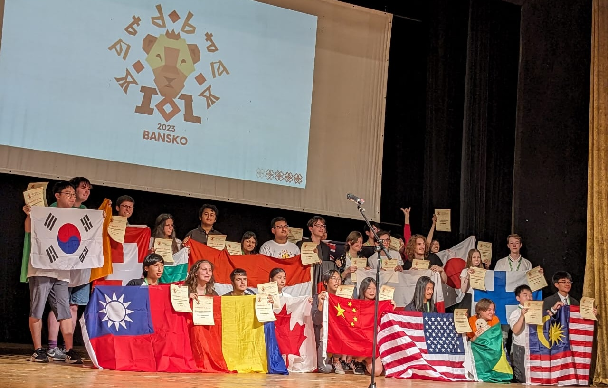

About

Linguistics
Languages are one of the most fascinating and core aspects of human culture and understanding. The scientific look at one's own language, a lot of other languages and forms of communication other living beings as well, is an interesting area to study.

Panini Linguistics Olympiad(PLO)
The Panini Linguistics Olympiad is the Indian national program for selection and training of the candidates who represent India at the International Linguistics Olympiad (IOL). The program is coordinated by Microsoft Research Labs India, International Institute of Information Technology Hyderabad, JNU Delhi and the University of Mumbai & is actively supported by regional coordinators across the country including Chennai Mathematical Institute, IIT Guwahati, SNLTR Kolkata, and IIT Patna.

International Linguistics Olympiad(IOL)
Since the mid-1960s, problem-solving competitions in linguistics for secondary school students have been taking place, mainly in Russia, Bulgaria and other eastern European countries. In recent years, the idea of the Linguistics Olympiads has spread to Western Europe, North America, Asia and Australia. Winners of the regional competitions qualify for the International Linguistics Olympiad (IOL), which has taken place annually since 2003.

Asia Pacific Linguistics Olympiad(APLO)
The Asia Pacific Linguistics Olympiad (APLO) is a regional linguistics olympiad with the aim of escalating attention to language and linguistics in the Asia Pacific region. It is similar to the International Linguistics Olympiad in spirit, and the nature and style of the problems. APLO is not a contest where students from different countries physically meet in one place to participate in the competitions. Instead, all contestants will compete in their home country on the same day.